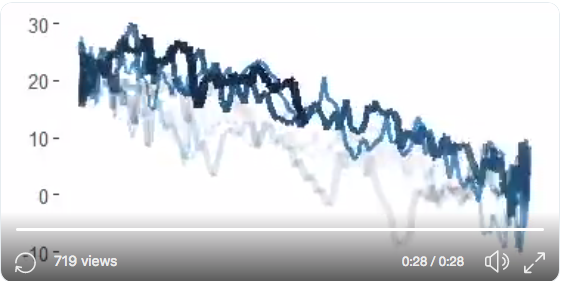
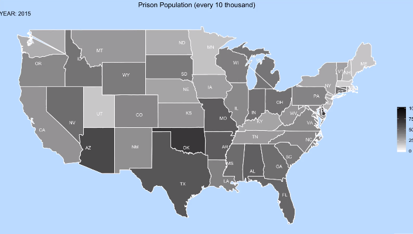
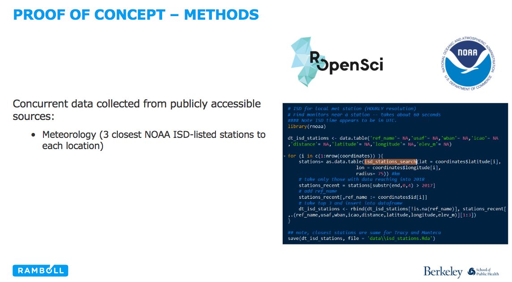

Oct 29, 2018
rOpenSci HQ
- OzUnconf https://ozunconf18.ropensci.org/ is running for the third year. The unconference is 22-23 November in Melbourne, Australia. OzUnconf is based on our main unconference in the US (http://unconf18.ropensci.org/) but more accessible to folks in Australia/Asia.
- We just had a community call. See a recent blog post for all the details: Community Call - Code Review in the Lab, or … How do you review code that accompanies a research project?. And here’s links to other resources from the call, including recording: http://communitycalls.ropensci.org/#past-calls
- We’re having another community call coming up soon. See a recent blog post for all the details. Community Call - Working with images in R.
Software 📦
CRAN:  GitHub:
GitHub: 
New packages
- A new version (
v1.0.1) ofnasapoweris on CRAN - NASA POWER API client. Checkout the docs to get started.

New versions
- A new version (
v0.8.0) ofboldis on CRAN - interface to Bold Systems (http://www.boldsystems.org/) API. See the release notes for changes. Checkout the vignette to get started.
bold_identify_parents()improvements, andbold_specimens()bug fix - A new version (
v6.1.0) ofdrakeis on CRAN - pipeline toolkit for reproducible computation at scale. See the release notes for changes. Checkout the docs to get started.
new fxns
map_plan()/plan_to_code()/drake_debug(); many improvements and bug fixes - A new version (
v0.7.0) ofrbisonis on CRAN - interface to the USGS BISON API. See the release notes for changes. Checkout the vignette to get started.
bison()now paginates internally and loseswhatparameter;bisonmap()fix - A new version (
v0.4.0) ofmicrodemicis on CRAN - Microsoft Academic API client. See the release notes for changes. Checkout the README to get started.
tests now use
vcr;ma_abstract()now a data.frame - A new version (
v0.15.4) ofDataPackageRis on CRAN - construct reproducible analytic data sets as R packages. Checkout the vignette to get started. - A new version (
v2.0-3) ofCoordinateCleaneris on CRAN - automated cleaning of occurrence records from biological collections. See the NEWS for changes. Checkout the docs to get started. - A new version (
v0.3.0) ofisdparseris on CRAN - parse NOAA Integrated Surface data files. See the release notes for changes. Checkout the vignette to get started.
small bug fix; working on incorporating metadata
- A new version (
v1.1.0) ofjqris on CRAN - a client for JQ, the JSON processor. See the release notes for changes. Checkout the vignette to get started.
jq()now supports connections (file paths, urls) and json objects; newbuild_fxns - A new version (
v0.0.8) ofosmdatais on CRAN - import OpenStreetMap data as simple features or spatial objects. See the release notes for changes. Checkout the docs to get started.
bug fixes in
trim_osmdataandopq - A new version (
v0.2.2) ofbikedatais on CRAN - download and aggregate data from public hire bicycle systems. See the release notes for changes. Checkout the docs to get started.
minor bug fixes
- A new version (
v0.5.0) ofepubris on CRAN - read EPUB file metadata and text. See the release notes for changes. Checkout the vignette to get started.
new fxn
epub_cat();epub()gainsencodingparam - A new version (
v0.2.6) ofstplanris on CRAN - sustainable transport planning. See the release notes for changes. Checkout the docs to get started.
new fxn
route_local();line2route()gainstime_sleepparam - A new version (
v1.1.0) offulltextis on CRAN - full text of scholarly articles across many data sources. See the release notes for changes. Checkout the fulltext book to get started.
new fxns
cache_file_info()&as.ft_data(); better error info inft_get(); many, many, many bug fixes and improvements - A new version (
v1.1.0) ofrgbifis on CRAN - interface to the Global Biodiversity Information Facility API. See the release notes for changes. Checkout the occurrence manual to get started.
now using
vcrfor tests; name issues metadata added;map_fetch()changes - A new version (
v0.2.8) ofwebmockris on CRAN - stubbing and setting expectations on HTTP requests. See the release notes for changes. Checkout the HTTP testing book to get started.
gains support for
httr! - A new version (
v0.2.0) ofvcris on CRAN - record HTTP calls to disk for test caching. See the release notes for changes. Checkout the HTTP testing book to get started.
gains support for
httr! - A new version (
v0.3.0) ofwikitaxais on CRAN - taxonomic information from Wikipedia. See the release notes for changes. Checkout the docs to get started.
now using
vcrfor tests;wt_wikipedia()bug fix - A new version (
v0.3.0) ofcharlatanis on CRAN - make fake data. See the release notes for changes. Checkout the vignette to get started.
ch_job()/JobsProvidergainda_DKlocale support; many fixes forJobsProvider/PersonProvider - A new version (
v0.3.4) ofjstoris on CRAN - read data from JSTOR/DfR. See the release notes for changes. Checkout the docs to get started.
parse references if available
Software Review ✔
We accept community contributed packages via our onboarding system - an open software review system, sorta like scholarly paper review, but way better. We’ll highlight newly onboarded packages here. A huge thanks to our reviewers, who do a lot of work reviewing (see the blog post on our review system), and the authors of the packages!
If you want to be a reviewer fill out this short form, and we’ll ping you when there’s a submission that fits in your area of expertise.
The following packages were recently submitted:
- DataSpaceR > An R Interface to the CAVD DataSpace
- Author: Ju Yeong Kim
- Issue: ropensci/onboarding#261
- Reviewers: not assigned yet
- nlrx > Setup, run and analyze NetLogo model simulations from R via XML
- Author: Jan Salecker
- Issue: ropensci/onboarding#262
- Reviewers: not assigned yet
On the blog
Technotes
Scott Chamberlain wrote about a new package pubchunks: pubchunks: extract parts of scholarly XML articles. Check out the package at ropensci/pubchunks.
rOpenSci HQ
Stefanie Butland writes about our next upcoming community call. Community Call - Working with images in R. Please join us for our next community call!
Use cases
The following 12 works use/cite rOpenSci software:
- Baquero & Machado used tabulizer in their paper Spatiotemporal dynamics and risk factors for human Leptospirosis in Brazil 1
- Rahman et al. used plotly in their paper KinaMetrix: a web resource to investigate kinase conformations and inhibitor space 2
- Vieilledent et al. used taxize in their paper New formula and conversion factor to compute basic wood density of tree species using a global wood technology database 3
- McAfee et al. used FedData in their paper Changing station coverage impacts temperature trends in the Upper Colorado River Basin 4
- Shema et al. used rAltmetric in their conference paper Retractions from altmetric and bibliometric perspectives 5
- Borer used pdftools in their dissertation Creating a Water Quality Geodatabase for the West Hawai ‘i Island Region 6
- Testo et al. used rgbif in their paper The rise of the Andes promoted rapid diversification in Neotropical Phlegmariurus (Lycopodiaceae) 7
- Horvatić et al. used plotly in their paper Integrated dataset on acute phase protein response in chicken challenged with Escherichia coli lipopolysaccharide endotoxin 8
- Milla et al. used taxize in their paper Phylogenetic patterns and phenotypic profiles of the species of plants and mammals farmed for food 9
- Hagerman et al. used riem in their paper Temporal and geographic distribution of weather conditions favorable to airborne spread of foot-and-mouth disease in the coterminous United States 10
- Yu, G. et al. used treeio in their paper Two methods for mapping and visualizing associated data on phylogeny using ggtree 11
- Degen & Faulwetter used rfishbase in their paper The Arctic Traits Database – A repository of arctic benthic invertebrate trait 12
In the news
Two people played with one of our newest packages (av) and shared their experience:
Average daily temperature in Bratislava (2016 - ~ Now). Thx @rOpenSci for av package, @thomasp85 for gganimate, and @JustTheSpring for sample code! There is lot of to improve... #ggplot2 #rstats #DataScience #Weather #gganimate #dataviz #datavideo pic.twitter.com/sMwg0z0M7d
— Peter Laurinec (@petolauri) October 16, 2018

In a blog post Animated Prison someone used av to help visualize the rate of incarceration over time in the US.

In a recent presentation rnoaa was cited: Improving pollution source resolution for real time low cost sensors using widely available data resources

Keep up with rOpenSci
- Mailing list: Sign up with an email address to get this newsletter sent to your inbox -> ropensci.org/#subscribe
- Alternatively, you can subscribe to this newsletter via our XML feed at https://news.ropensci.org/feed.xml or our JSON feed at https://news.ropensci.org/feed.json
- rOpenSci on Twitter: @ropensci
- The rOpenSci blog at ropensci.org/blog - you can subscribe in any RSS aggregator, or manually via https://ropensci.org/feed.xml. We also announce new blog posts on our Twitter account.
Footnotes
-
Baquero, O. S., & Machado, G. (2018). Spatiotemporal dynamics and risk factors for human Leptospirosis in Brazil. Scientific Reports, 8(1). https://doi.org/10.1038/s41598-018-33381-3 ↩
-
Rahman, R., Ung, P. M.-U., & Schlessinger, A. (2018). KinaMetrix: a web resource to investigate kinase conformations and inhibitor space. Nucleic Acids Research. https://doi.org/10.1093/nar/gky916 ↩
-
Vieilledent, G., Fischer, F. J., Chave, J., Guibal, D., Langbour, P., & Gérard, J. (2018). New formula and conversion factor to compute basic wood density of tree species using a global wood technology database. American Journal of Botany. https://doi.org/10.1002/ajb2.1175 ↩
-
McAfee, S. A., McCabe, G. J., Gray, S. T., & Pederson, G. T. (2018). Changing station coverage impacts temperature trends in the Upper Colorado River Basin. International Journal of Climatology. https://doi.org/10.1002/joc.5898 ↩
-
Shema, H., Mazarakis, A., Hahn, O., & Peters, I. Retractions from altmetric and bibliometric perspectives. http://altmetrics.org/wp-content/uploads/2018/09/altmetrics18_paper_3_Shema_new.pdf ↩
-
Borer, D. (2018). Creating a Water Quality Geodatabase for the West Hawai ‘i Island Region (Doctoral dissertation, University of Southern California). https://spatial.usc.edu/wp-content/uploads/2018/10/72893.pdf ↩
-
Testo, W. L., Sessa, E., & Barrington, D. S. (2018). The rise of the Andes promoted rapid diversification in Neotropical Phlegmariurus (Lycopodiaceae). New Phytologist. https://doi.org/10.1111/nph.15544 ↩
-
Horvatić, A., Guillemin, N., Kaab, H., McKeegan, D., O’Reilly, E., Bain, M., … Eckersall, P. D. (2018). Integrated dataset on acute phase protein response in chicken challenged with Escherichia coli lipopolysaccharide endotoxin. Data in Brief. https://doi.org/10.1016/j.dib.2018.09.103 ↩
-
Milla, R., Bastida, J. M., Turcotte, M. M., Jones, G., Violle, C., Osborne, C. P., … Byun, C. (2018). Phylogenetic patterns and phenotypic profiles of the species of plants and mammals farmed for food. Nature Ecology & Evolution, 2(11), 1808–1817. https://doi.org/10.1038/s41559-018-0690-4 ↩
-
Hagerman, A. D., South, D. D., Sondgerath, T. C., Patyk, K. A., Sanson, R. L., Schumacher, R. S., … Magzamen, S. (2018). Temporal and geographic distribution of weather conditions favorable to airborne spread of foot-and-mouth disease in the coterminous United States. Preventive Veterinary Medicine, 161, 41–49. https://doi.org/10.1016/j.prevetmed.2018.10.016 ↩
-
Yu, G., Tsan-Yuk Lam, T., Zhu, H., & Guan, Y. (2018). Two methods for mapping and visualizing associated data on phylogeny using ggtree. Molecular Biology and Evolution. https://doi.org/10.1093/molbev/msy194 ↩
-
Degen, R., & Faulwetter, S. (2018). The Arctic Traits Database – A repository of arctic benthic invertebrate traits. Earth System Science Data Discussions, 1–25. https://doi.org/10.5194/essd-2018-97 ↩